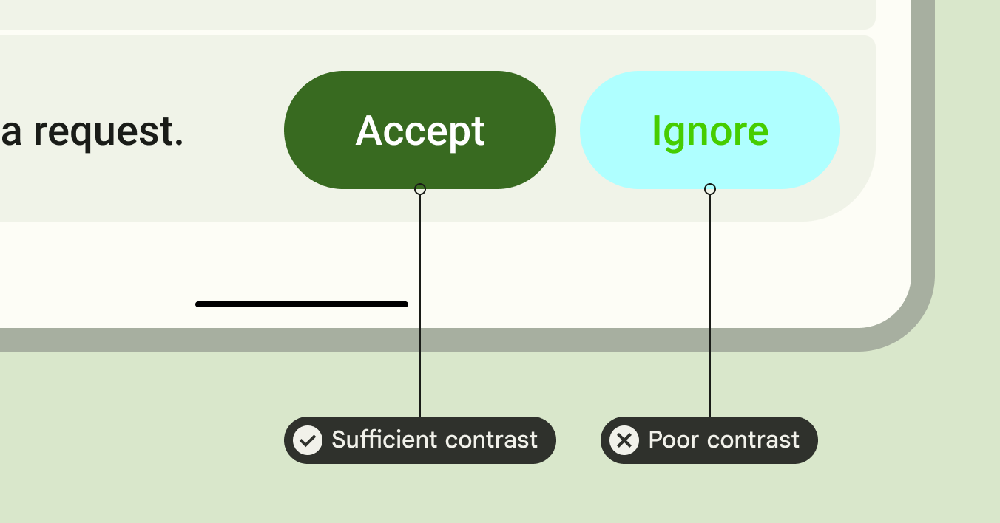

Colour contrast#
What is colour contrast? Put simply, colour contrast is how different one colour is from another colour. Measuring colour contrast requires 2 colours to be compared against each other. Colour contrast is particularly important for text and other essential elements.
{kind=link}
https://m3.material.io/styles/color/the-color-system/accessibility
Why do we need to ensure sufficient colour contrast? Examples of poor contrast; who it helps Having good colour contrast ensures that people with low vision are able to see elements clearly. It also helps when viewing a screen in bright sunlight. This is a good example of accessibility helping everyone, not just people with disabilities.

Which of these colour pairings has higher colour contrast?
What are colour ratios? .. TODO Look at Adee task, what is the colour ratio?
What are the WCAG guidelines on colour contrast? Recommendations from the WCAG for colour contrast differ for AA and AAA levels. Remember that AAA level requirements are stricter than AA level requirements. Read the following WCAG excerpt Success Criterion 1.4.3 Contrast (Minimum) (Level AA):
The visual presentation of text and images of text has a contrast ratio of at least 4.5:1, except for the following:
- Large Text:
Large-scale text and images of large-scale text have a contrast ratio of at least 3:1;
…
Read the following WCAG excerpt Success Criterion 1.4.4 Contrast (Enhanced) (Level AAA):
The visual presentation of text and images of text has a contrast ratio of at least 7:1, except for the following:
- Large Text:
Large-scale text and images of large-scale text have a contrast ratio of at least 4.5:1;
…
From the two excerpts, please answer the following questions:
From the WCAG, 3:1 is the minimum colour ratio requirement for:
From the WCAG, 4.5:1 is the minimum colour ratio requirement for:
From the WCAG, 7:1 is the minimum colour ratio requirement for:
Important non-text information such as graphics have the same WCAG contrast requirements as large text. That is, graphics should have a contrast ratio of 3:1 for level AA and 4.5:1 for level AAA.
How is colour contrast different from colour blindness? TODO Counterexample where different hues but same contrast. [I have an example in Figma] It is easy to get confused between colour blindness and colour contrast since they are both related to colour. But it’s important to remember colour blindness is related to the hues of colours (e.g., red, yellow) and colour contrast is related to the luminance (or brightness of colours). For example, the image below is accessible in terms of colour blindness, since it is only in black and white. However, it is still hard to read because of insufficient colour contrast. Its colour ratio is around 1.7:1 which is below the WCAG requirements.